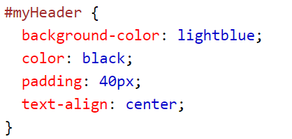
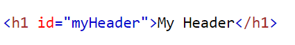
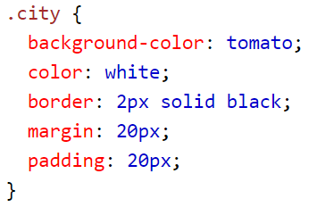
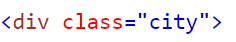

Element kallas alla komponenter som används när man skriver html, vilket är olika ord från syntax:en. Alltså är h1, p, div och img exempel på olika element. Dessa element har olika funktioner då h1 är för skapa en header och div är för att skapa en box, vanligen runt andra element. Oftast har element en slut- och starttag för att indikera var elementet går.
HTML står för Hyper Text Markup Languages och är en typ av syntax, programmeringsspråk, för webbutveckling. Det är också en syntax som fungerar för hypertext vilket är när användaren eller läsaren själv kan välja vilken väg de vill gå. Detta kan man göra genom att texterna är sammanlänkade i ett nätverk.
ID är till för att ge element olika egenskaper. Det är inte faktiskt ID attributet som ändrar på elementet men i css:en kan man skriva ID namnet och därifrån ändra på elementets egenskaper. Det namnet man väljer för ett ID attribut kan endast användas en gång i hela HTML dokumentet till skillnad från en class, vilket vi kommer in på senare. Du ger ett element ett ID genom att skriva (se bild 2) och du ändrar på det i css:n genom att skriva (se bild 1).
 Class är i princip samma sak som ID. För att ge ett element olika egenskaper kan man ge den en class som man sedan ändrar på i css:en. Skillnaden är att man kan använda det namn man valde för class attributet kan man använda för flera element. Du ger ett element en class genom att skriva (se bild 2) och du ändrar på det i css:n genom att skriva (se bild 1).
 Meta är en tag som tillför metadata till webbsidan man arbetar med. Metadata är den information som man inte ser på själva webbsidan utan den information som sökmotorer som till exempel google använder sig av. Till exempel kan metadatan användas för att kunna visa sidan när man söker på vissa nyckelord. Generellt är det till för att få information om sidan utöver det man ser visuellt. Exempel på dessa taggar är < title > och < dokument >.
Det är när ens webbsida eller specifika element automatiskt anpassar sig för olika typer av enheter, till exempel laptop och telefon. Detta kan man göra på lite olika sätt. Man kan göra en bild responsive genom att ge elementet egenskapen width 100% eller max width 100%. Att ha responsive textstorlek går också genom att skriva storleken med vw, till exempel 20vw. Det är dock inte det optimala för att få hela sidan responsive utan fungerar mer för specifika element. För att göra en hel sida responsive är det vanligt att använda bootstrap som är färdig css som man använder när man skriver sin egna html.
Http står för Hypertext Transfer Protocol och den jobbar i det sjunde lagret av OSI-modellen. Det sjunde lagret är applikationer som är ett gränssnitt mellan användaren och de maskiner och program som slutanvändaren använder. Just http är till för datakommunikation mellan olika enheter på WWW, World Wide Web, och är därav ett kommunikationsprotokoll. Den data man skickar är främst webbsidor och för att skicka allt detta används tekniken hypermedia som är en generalisering av hypertext. Det fungerar på samma sätt som hypertext men istället för att bara text är sammanlänkade är även ljud, grafik och annat också sammanlänkande. Detta gör att man kan som användare välja var man vill gå utan att behöva följa något linjärt mönster.
Https står för Hypertext Transfer Protocol Secure och är en säker väg för http-data. Detta sker genom att transportvägen är krypterad vilket innebär att ingen annan ska kunna läsa datan förutom de som har nyckeln för att datan ska bli läsningsbar. Https används ofta när man vill skydda sin integritet som till exempel vid inloggning eller annan hantering av privat information. Krypteringen gör att ingen tredje part ska kunna ta del av information. Det är även viktigt för företag när de ska överföra betalningar eller annan känslig data.
Det är data som är komprimerat för att det ska ta så lite plats som möjligt. Man gör detta när man till exempel vill kunna skicka information snabbare eller när man vill att det ska ta så lite plats som möjligt. Att komprimera data kan man göra på lite olika sätt. Ett vanligt sätt är att ta bort och ändra på de symboler som återkommer mycket för att minska mängden data. Med denna teknik kan de symboler man tar bort försvinna permanent eller så kan man återställa dem när man ska använda datan.
CDN står för Content Delivery Network och är nätverk med proxy-servrar vilket jobbar som en förmedlare med klientens förfrågningar till de servrar klienten vill nå. CDN bygger på att skicka ut webbinnehåll, medieinnehåll och streaming. Med användningen av denna typ av nätverk förbättra man prestandaden, driftsäkerheten och man sänker fördröjningar. Bolag kan använda CDN för att till exempel få bättre leverans åt sina användare att detta kan de göra genom att köpa tjänsten eller ha sin egna CDN. De som har sin egna CDN är de som har tillräckligt mycket tillgångar att driva deras serverinfrastruktur i stor skala globalt. Företag som Facebook, Google och Netflix har dessa tillgångar.
Det är när man laddar ner en bootstrap fil med all css som man sedan lägger in i sin mapp där man har html-filen/filerna som man ska använda med bootstrap css:en.
Det är ett av det mest populära biblioteken med Javascript vilket är till för att underlätta ens webbutveckling. När du gör en webbsida kan du med jquery lättare göra komplicerade funktioner och effekter utan att själv behöva lägga tid på att göra en jättelång kod för att få saker att fungera. Även vanliga funktioner blir lättare att arbeta med och allt blir mer tidseffektivt. Här är deras hemsida!
Flexbox är ett endimensionellt layout system som gör en webbsida responsive på ett smidigt sätt. Det är ett mycket bättre alternativ än att använda float och olika typer av positionering vilket inte blir helt anpassningsbara. När man använder flexbox har man så kallade parent element och child element. Parent elementet kallar man för container och det är det elementet som är runt child elementen som man kallar för item. Med flexbox justerar och fördelar man containers i det utrymmet man har. Alltså ändras container:ns storlek beroende på det utrymme som finns. För att göra ett element till ett flexbox element sätter man display: flex; i css:n.
Grid liknar flexbox då den är till för att göra det lättare att designa webbsidor utan att behöva använda float och positionering, gird har även också parent elements och child elements. Skillnaden är att grid är ett tvådimensionellt layout system. Med grid kan man ta vara på många funktioner som försvinner med de metoder man har använt för att lösa de problem man stöter på när man håller på med layouts för webbsidor. Flexbox fixar många av dessa problem men med grid kan man göra mer komplexa layouter. För att göra ett element till ett grid element sätter man display: grid; i css:n.
Code snippet beskriver den lilla delen av source code, machine code eller text som är återanvändbar. Man använder code snippet för att inte behöva skriva repetitive kod när man programmerar vilket är ett sätt att spara på tid och tangenttryck.